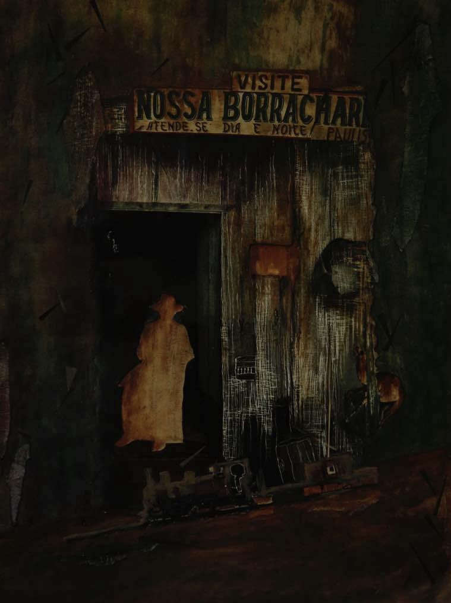
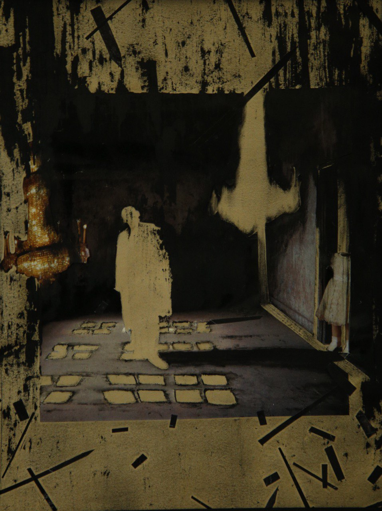

Fariba Rahnavard, an Iranian contemporary and modern painter, was born in Isfahan. She started professional painting at the age of 18. After years of professional work, she got into the Art and Architecture faculty at the Islamic Azad University of Tehran and during these years, turned to Abstract Expressionism, due to her interest in the tragedies of the modern world. The subjects of her approach were mostly history, violence, and disaster in the modern world, which can be seen in her works. Her perseverance in this path resulted in her presence in biennials and international festivals.
Her father was an architect and all her family were artists and fans of music. Her family’s influence resulted in her interest and education in painting and now she is an M.A. student of Painting. She has the experience of holding more than eleven group and solo exhibitions both in Iran and abroad. She seems to be inspired by artists with subjects close to hers like Bacon and Abramovic and considers the study of the works of surrealist artists, like René Magritte, effective in her own works. According to her, she has been waiting for this exhibition, The Disaster Never Rests. She is concerned with the world and its disastrous events in life and, despite its bitter incidents, she is hopeful of the human world.
Undoubtedly, painting starts from joy and influence on the audience, but it seeks a higher purpose. A picture entwined in every individual’s contemporary concerns makes them ponder, conflicts them and turns them into something other than what they already had been, and finally, painting seeks something more than mere joy. This beautiful incident occurs when we match the painting’s text with ourselves, in such a way that the verbal words are washed, our gestures and, more importantly, our beliefs are changed, and we are forced to understand the world in a different way.
Solmaz Naraghi, the young painter’s musician friend, has written about the works of Fariba:
The overlapping layers in each work create an imaginative narration, which finds its own shapes in the mind of the audience. The genesis of the narrative is where the times twist into each other and it seems that events, parallel to each other, are taking place. This confrontation with the concept of space and time, which is frequently found in modern paintings, is, more than anything, the result of the modern approach in metaphysics… finite, but without boundaries, following the perpetual process of metamorphosis of elements, which together intensify the dynamism of the disaster.
A short interview following her exhibition at 4 Gallery
How well was the reception toward your works?
There were many viewers, also many criticisms about the works, but economically, we did not have a good sale. It may be because of society’s economic situation, which nowadays is not good at all.
Why disaster, why expressionism, and why bitter?
It seems that my works are bitter, but looking deeper into the light, one can figure out that the background of the work seems bitter because of broken and expedient forms and low lighting, but to present hope for change, what everyone in the Middle East seeks, the darkness needs to be shown so that the light of hope can be recognized. Therefore, my works are an interaction between bitterness and hope for the future. My works refer to the bitter present, but their main purpose is the hope of change with a responsible attitude.
Will your brush, like classic expressionists, influence the public opinion and turn into the conscience of the man?
Artists create because it is their calling to create. How successful and influential their work is can be of no concern to them. Naturally, there should be critics who evaluate it over time; therefore, I have no answer for you because my job is to create.
What are the achievements of your visual composition and what is your tempo? What are you pursuing with this technique?
Generally, the achievement for every artist is to be influential, but not for a special or certain concept. But, more than this, what an artist does through the process of creation is self-scrutiny. Art is a way for man to know his capacities and, also, works of art may play the role of self-scrutiny for the audiences. I am not an exception. But for the second part of your question, instead of style, if I am going to explain the process of creating my works, I can note that collage and this type of behavior, to achieve the main purpose of my works, is a way to immediately enter myself into my inner world and benefit from this occurrence.

Coexistence with Death
Solmaz NaraghiPublished in Zanan Emrooz magazine, vol. 34
The only thought that escapes the dominations of reality is fantasy.
What makes the demonstration of pain joyful? What mysterious ecstasy lies inside ugliness, that since ancient times to the modern era has persuaded humans into the reflection of pain, torture, destruction, and demise through their creativity?
From monsters and terrifying legendary creatures like griffons, cynocephali and cyclopes in ancient Greek and medieval art to Xrafstar (sinister and demonic creatures like the dragon, snake, lion and scorpion) in ancient Iran, generally pictured in illustrated versions of the Shahnameh or Aja’ib al-Makhluqat, and scenes from the torture of the Christ, scenes from the Karbala incident and scenes from Hell, all show the historical tendency of artists and poets to reflect disaster or destruction as a part of the world’s reality.
Fariba Rahnavard’s collages in her collection Disaster Never Rests are also a continuation of this long-lived tradition. She, who is unhappy with the perpetual presence of disaster in the everyday life of man, finds a kind of catharsis by reflecting it, which is itself a mental mechanism of human beings to overcome fear and weakness. It is also what the audience experiences when facing works of art like hers.
Even though she has great skills in realistic representation of objects and figures, Rahnavard prefers to move sharply into the next level by attaching photos into her paintings; to the level where reality becomes distorted and turns into the artist’s will. She says: “Making composition takes less effort for me in a collage form. These originally were ideas to be painted on canvas, but when they were admired in various international festivals, I followed this technique more seriously. With collage, I can finish each canvas in one or two months. Of course, it depends on my own thoughts. I work better under pressure and get the result I want quicker when I have disrupted thoughts.”
The fact is that collage is a reflection of our era’s soul. It reflects decentralized souls who try to keep integrated despite inhomogeneous external and internal stimuli. Collage also gives Rahnavard the opportunity to reflect the balance of the universe that results from the perpetual tension of opposites: our peaceful coexistence with continuous disasters and deaths lying in ambush, the good and the bad neighborhood, tension and peace, unity and division.
The creation of such an atmosphere, besides collage, is also possible through composition, or the placement of details in the whole work: the things that are perpetually about to explode or be annihilated are spread in the background, while the potentially stable elements, like buildings, cottages, castles and walls, which are lost among the fragments or are fading out gradually, are drawn on the horizontal axis. On the same axis, we see people busy with their routine activity and boredom or inactivity, in the form of work, games, wars, or obliviousness. Showing multiple events in the same frame, by dividing the space into horizontal layers and placing background and foreground scenes at the top and bottom of the frame, sometimes recalls the visual narrative methods of Iranian miniature. Therefore, the works of Fariba Rahnavard, without the slightest similarity to Iranian miniature in terms of subject, are connected to it in the least expected areas.
We are not much off track if we consider the distinct status of man in the dark and distorted ambiance of the canvas as a sign of what Fariba calls hope: the bodies that are colorful despite the gray tonality of the work and sometimes become its center. It goes to the point that the eye is guided to them automatically and is forced to recognize these miserable creatures as the victim or the operator of the disaster.
The overlapping layers have made an imaginative narration for each canvas, which finds its own shapes in the mind of the audience. The genesis of the narrative is where the times twist into each other and it seems that events, parallel to each other, are taking place. This confrontation with the concept of space and time, which is frequently found in modern paintings, is, more than anything, the result of the modern approach in metaphysics. It confronts us with a new design of the world and reminds us that “all the universe is in motion. Every particle is only definable in its own position in time and place; therefore, what is defined is an event. ‘Particle-events’ are fundamental components of the world’s structure. These particle-events, continuous and bound in their totality, form the world of new physics: finite, but without boundaries, following the perpetual process of metamorphosis.”
In Fariba Rahnavard’s works, this deadly motion and metamorphosis are shown through rough vertical and horizontal touches and disintegrated particles spread through the general space of the work. Together these elements intensify the dynamism of the disaster. Adding all this to the way she spreads light, we find the artist picturing a world in which everything is layered and mysterious.
She says: “Disaster never ends, whether in personal or social life. Some of my works refer to personal life, like the work in which a house has a chandelier and an absent person is there. Some of my works have social references. Generally, I can say I am dissatisfied and protest against the situations I see. Therefore, I might seem disappointed; however, I am very hopeful.”

I Exist, but in Darkness
Dr. Hossein ArdalaniArt researcher and university faculty member. Written for the exhibition The Disaster Never Rests.
How can one be apathetic and cold toward the life that has spread so vastly in front of one’s eyes?
No; painting decorates the apartments no more.
Bravery in asking fundamental questions is what philosophy presents, and by emphasizing this difficult moment, it promises a bright and solid path within itself. Therefore, before anything else, the painter can ask: Who am I? Who can I be? Who do I want to be? And why do the purest moments of my life happen while painting?
Thus the artist begins to know himself better; his joy of creation multiplies, and he starts to create with a deeper understanding. It is in this very moment that the artist can hide his ontological understanding in hidden and complex visual and semantic layers and wait, yearning for a like-minded audience: an audience who, without explanation, understands the experience that the artist shares.
Fariba Rahnavard was born in Isfahan and raised in Tehran. Her family’s influence resulted in her interest and education in painting, and now she is an M.A. student in Painting. She has held more than eleven solo and group exhibitions, both in Iran and abroad, including International Independent Contemporary Artists at Artrooms in London and the group exhibition of the Iranian Painters Association at Satura Art Gallery in Genova, Italy, in 2015. She seems to be inspired by the works of artists with objectives similar to hers, like Francis Bacon and Abramovic, and considers the study of surrealist artists such as René Magritte to be effective in her works.
Genesis is where the times twist into each other and it seems that events, parallel with each other, are happening. This confrontation with the concept of space and time, which is frequently found in modern paintings, is, more than anything, the result of the modern approach in metaphysics.
Undoubtedly, painting starts from joy and influence on the audience, but it seeks a higher purpose. A picture entwined in every individual’s contemporary concerns makes them ponder, conflicts them and turns them into something other than what they already had been, and finally, painting seeks something more than mere joy. This beautiful incident occurs when we match the painting’s text with ourselves, in such a way that the verbal words are washed, our gestures and, more importantly, our beliefs are changed, and we are forced to understand the world in a different way.
With this introduction, Rahnavard’s works can be better understood. Struggle, multilayered concerns, complexities of form, and dark and vague lights inside bitter subjects reflect the artist’s thoughts.
It is by creating this atmosphere that Rahnavard invites her audience to rebel: an inner and semantic rebellion, to know who they are, and who they can be.
Multilayered atmospheres in Rahnavard’s paintings, without separate planes and on a dark background, intensify the obscurity and hopelessness, as if the artist is trying to make the audience leave the work in uncertainty. Entwined textures and layers, like inseparable layers of time, are subjects of today’s lives that conflict man in an eternal struggle between survival and demise. In her paintings, light is focused on children’s faces during war, and the warrior rides through the fallen city in darkness.
Innocent children seem to reflect the disastrous consequences of war. This theme, alongside the idle body in the middle of the room and its dark and confusing surroundings, reflects the same concept in another way, as if the artist tries to show that good eras will be destroyed and calm will never last. This is the reality of human life: an inner reality whose outer representation can be the lives of people in conflict-affected countries of the Middle East.
To express her feelings toward contemporary human life, the artist tries to picture an all-illuminating mirror, reflecting the bitter days of contemporary life.
These concepts are also present in the forms used in Rahnavard’s paintings. The sharp claws in another of her works, the sharp forms with oblique angles, and devastated forms in fragile combinations are all reflections of the idea that this is a disaster and it won’t end. Rahnavard acts bravely in expressing her concepts. She does not limit herself in technique and shows her freedom in choosing the type of image, based on collage.
This freedom is also clear in the composition of the paintings. Analyzing the works, one sees that no single procedure is repeated, although the artist has achieved the proper composition in only some of them. Either way, this process lets her use more feeling while creating the work, and then transfer it to the audience. This way she can impose her visual atmosphere on the audience, as her theme is the imposition of unwanted individuals and situations on others.
It may be possible to say that objectification, and man becoming an instrument in contemporary life, is among her central themes. But a little further, we realize that in the heart of darkness, Rahnavard is inviting us to be hopeful. Two subjects can be understood in her works: she asks two things of contemporary humans, responsibility and hope for change.
An invitation to nowhere, referring to no distinct concept and presenting no predetermined plan, shows a single consistent behavior across all of her works. From this continuous behavior we understand that she invites the audience into suspension, and a life full of suspension. It seems artists prefer their works to be understood, rather than themselves.